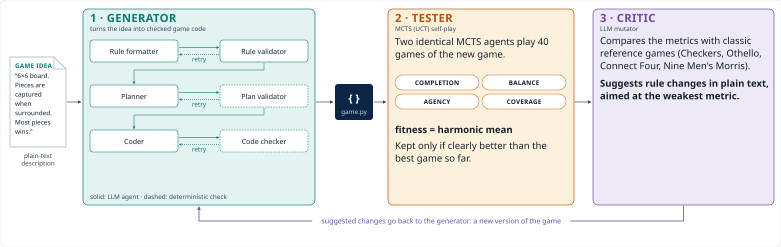
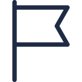
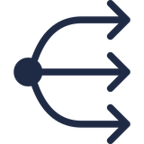
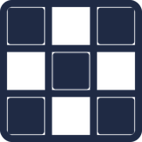
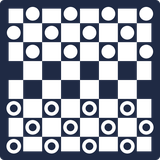
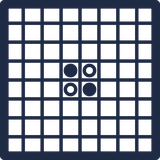
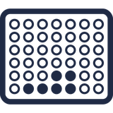

Feedback makes games better, on average
Fitness of the best game so far, per iteration (1 = first draft). Line: mean of the 16 runs. Band: middle half of the runs (25th–75th percentile).
AIIDE 2026 · 22nd AAAI Conference on Artificial Intelligence and Interactive Digital Entertainment
Instituto de Informática, Universidade Federal do Rio Grande do Sul (UFRGS), Porto Alegre, Brazil
Poster and Case Study Demo Session · Thu Nov 12, 5:30 PM · Belo Horizonte
LLM agents write and revise the game as Python code, MCTS agents play it, and the results of play decide what to change next. This is evolutionary game design, now with LLMs.

Two identical MCTS (UCT) agents play 40 games of each new candidate. Four metrics, each from 0 to 1, summarise the games; fitness is their harmonic mean, so one broken metric pulls the whole score down.

CompletionShare of games that end with a winner.
AgencyHow often a player has a real choice.
CoverageHow much of the board gets used.The mutator compares each candidate's metrics with four classic games and suggests rule changes in natural language. A new version replaces the best one only if it is clearly better and does not lose on both completion and balance.

Checkers
Othello
Connect Four1,000 MCTS matches per game. These are the values the mutator compares against.
| Compl. | Balance | Agency | Cover. | Fitness | |
|---|---|---|---|---|---|
| Checkers | 0.363 | 0.997 | 0.824 | 0.499 | 0.573 |
| Connect Four | 0.954 | 0.977 | 0.981 | 0.741 | 0.901 |
| Othello | 0.968 | 0.994 | 0.966 | 0.998 | 0.981 |
| Nine Men's Morris | 0.699 | 0.933 | 0.998 | 0.986 | 0.885 |
16 runs: 4 LLMs × 4 games, one run per pair. Each prompt has its own level of detail (C1 minimal to C4 complete). Hover or tap the charts for details.
Fitness of the best game so far, per iteration (1 = first draft). Line: mean of the 16 runs. Band: middle half of the runs (25th–75th percentile).
Fitness of the best game each run produced.
| DeepSeek V4-Pro | Claude Sonnet-5 | GPT-5 | Qwen3.6 Plus | Mean | |
|---|---|---|---|---|---|
| C1 Connection | 0.819 | 0.784 | 0.299 | 0.817 | 0.680 |
| C2 Capture | 0.010 | 0.858 | 0.700 | 0.982 | 0.637 |
| C3 Pursuit | 0.038 | 0.165 | 0.038 | 0.038 | 0.070 |
| C4 Promotion | 0.854 | 0.809 | 0.868 | 0.870 | 0.850 |
| Mean | 0.430 | 0.654 | 0.477 | 0.677 |
Mean fitness over the four games.
Solid line: best game so far. Dotted line: an attempted change. Dot: kept. ×: rejected. Hover a model below to follow it across the four games.
Minimal prompt: a path-connection game with limited bridge tiles.
A 6×6 game where surrounded pieces are captured and the player with more pieces wins.
An asymmetric 5×5 game: a King tries to reach a corner, four Guards try to immobilise it.
A 6×6 game with forward moves, diagonal jump captures, promotion, and one mechanic the model invents.
The best game each pipeline run produced, playable against an MCTS (UCT) agent in your browser. Nothing is sent to a server.
Build a continuous path between opposite sides of the board, using a limited number of bridge tiles to cross the opponent's paths.
Surround opponent pieces on all sides to capture them. The game ends when the board is full or no moves remain, and the player with more pieces wins.
The King starts in the centre of a 5×5 board and wins by reaching a corner. Four Guards win by immobilising the King. Pieces slide until they hit an obstacle.
Basic pieces step forward and capture by jumping diagonally; reaching the far row promotes them. The model had to invent one extra mechanic.
Feedback from simulated play improves LLM-written games on average, and the benefit depends on the game. The generator–tester–mutator structure is a workable way to do it.
Each game came with its own level of detail, so game and prompt detail are confounded. One run per model–game pair, no ablation of the loop or its agents yet, MCTS may be a weak tester and the metrics are proxies, and there was no human playtesting. Next: the same game at several detail levels, repeated runs, ablations and playtests.
@inproceedings{oliveira2026generating,
title = {Generating Board Games with {MCTS} and {LLM} Agents},
author = {Bauer de Oliveira, Gabriel and Tavares, Anderson Rocha},
booktitle = {Proceedings of the AAAI Conference on Artificial Intelligence
and Interactive Digital Entertainment (AIIDE)},
year = {2026}
}